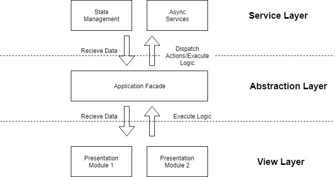
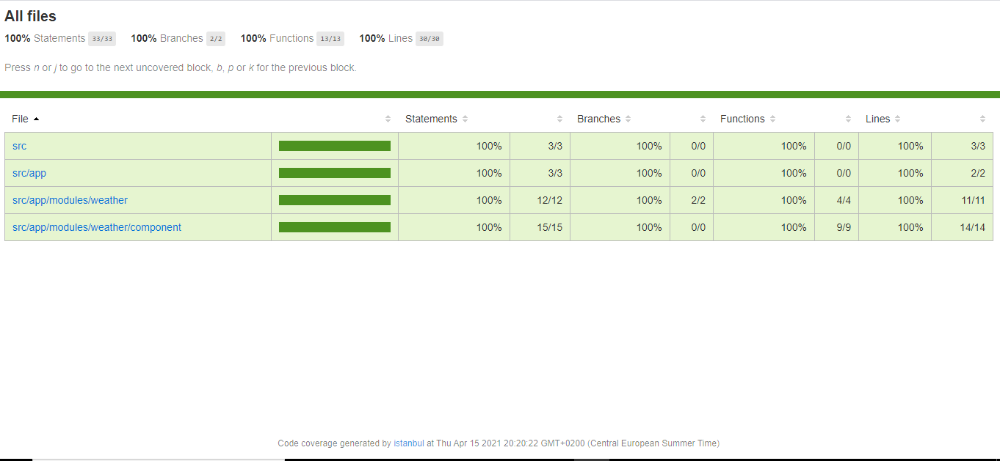

This is a SPA(Single Page Application) based on Angular framework. This application is used to fetch and display weather data using the open weather data APIs. It shows the five European cities(Amsterdam, Berlin, Paris, Rome, Zurich) average temperature with wind speed in a tiles view. When user clicks on the tile, It shows the weather forecast for next few hours(next 12 hours in the intervals of 3 hours) in terms of temperature, wind speed and details of the respected city.
You can find the Open Weather Data API here - https://openweathermap.org/current, You have to register and subscribe in order to use and get the API key which is required query parameter of the open weather data api.
Framework - Angular 11.2.x
UI Component Library - Angular Material 11.2.x
Runtime Environment - Node.js 14.15.x
The architecture followed uses best principles for scalability in order to maintain sustainable development speed and ease of adding new features in the long run.

View layer - is responsible to present and to delegate user’s actions to the service layer, through the abstraction layer .
Abstraction layer - is responsible for a decoupling the view layer from the service layer and also has its very own defined responsibilities.
Service layer - is responsible for data manipulation and outside world communication happen here
This tree represents the directories created.
.
├── weather-app-folder
└── src
├── app
│ ├── core
│ ├── data
│ ├── layout
│ ├── module
│ └── shared
└── stylesThis project was generated with Angular CLI version 11.2.3.
Run ng serve for a dev server. Navigate to http://localhost:4200/. The app will automatically reload if you change any of the source files.
Run ng generate component component-name to generate a new component. You can also use ng generate directive|pipe|service|class|guard|interface|enum|module.
Run ng build to build the project. The build artifacts will be stored in the dist/ directory. Use the --prod flag for a production build.
Run ng test to execute the unit tests via Karma.
Run ng test/ng test --no-watch --code-coverage.
Find the latest code coverage report below

Run ng e2e to execute the end-to-end tests via Protractor.
While you can use TypeDoc to document Angular apps, it will treat your code as any other plain TypeScript app. That means no Angular specific documentation. But there is a whole lot to be documented. Compodoc solves this, it is focused on Angular apps specifically giving you a much more tailored solution.
Run npm run compodoc to see the Angular specific documentation.
To get more help on the Angular CLI use ng help or go check out the Angular CLI Overview and Command Reference page.